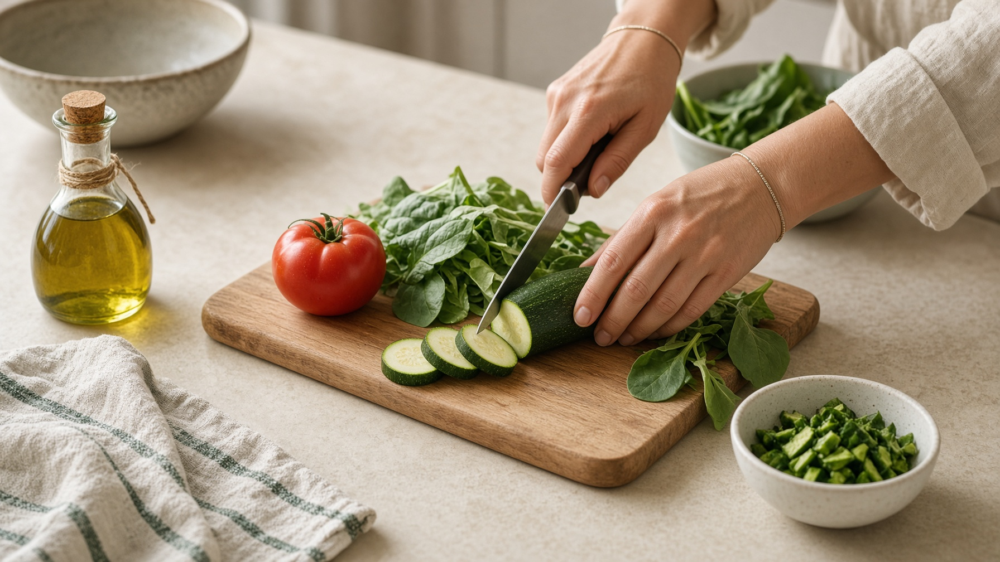

Nutrición en el paciente sano
Prevención, hábitos y planes reales para el día a día: familia, deporte, embarazo o menopausia.
- · Prevención de la obesidad infantil y en adultos
- · Dietas personalizadas
- · Alimentación materno-infantil: embarazo y lactancia
- · Control alimentario en la mujer fértil
- · Seguimiento en menopausia y climaterio
- · Alergias e intolerancias alimentarias
- · Trastornos de la conducta alimentaria
- · Nutrición del deportista
- · Nutrición infantil
- · Dietas vegetarianas o veganas
- · Alimentación consciente